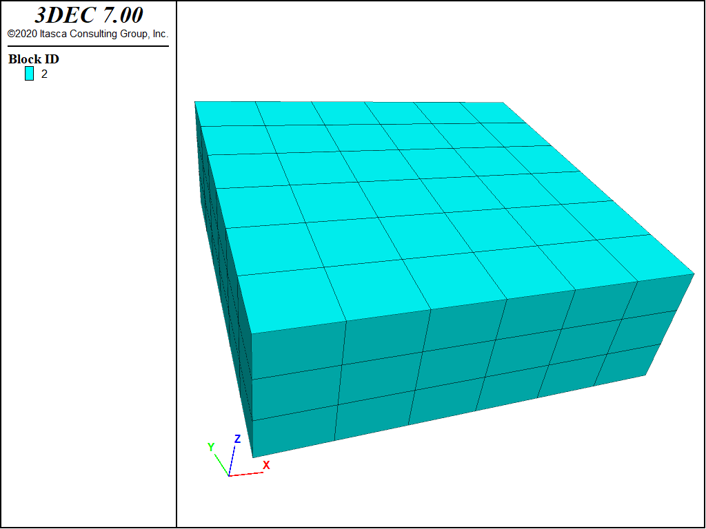
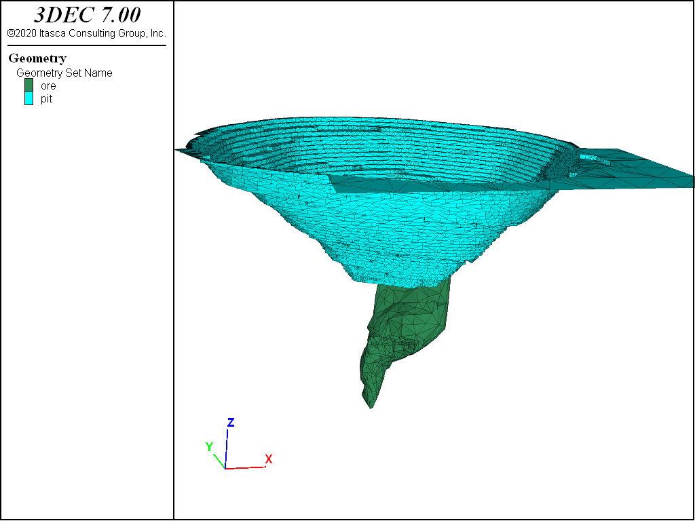
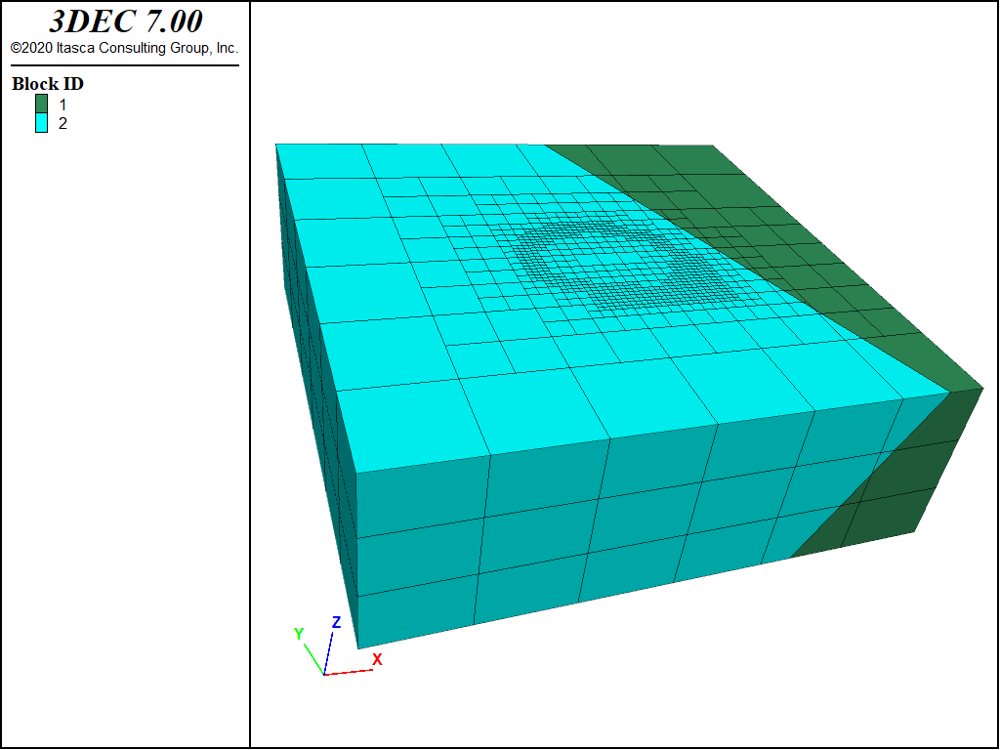
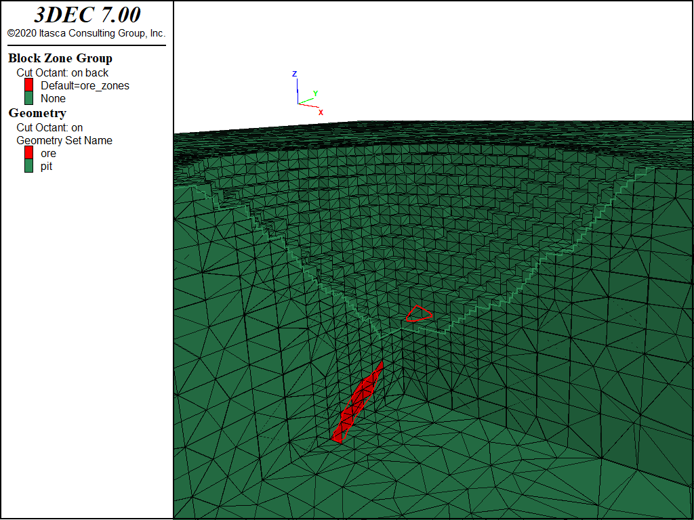
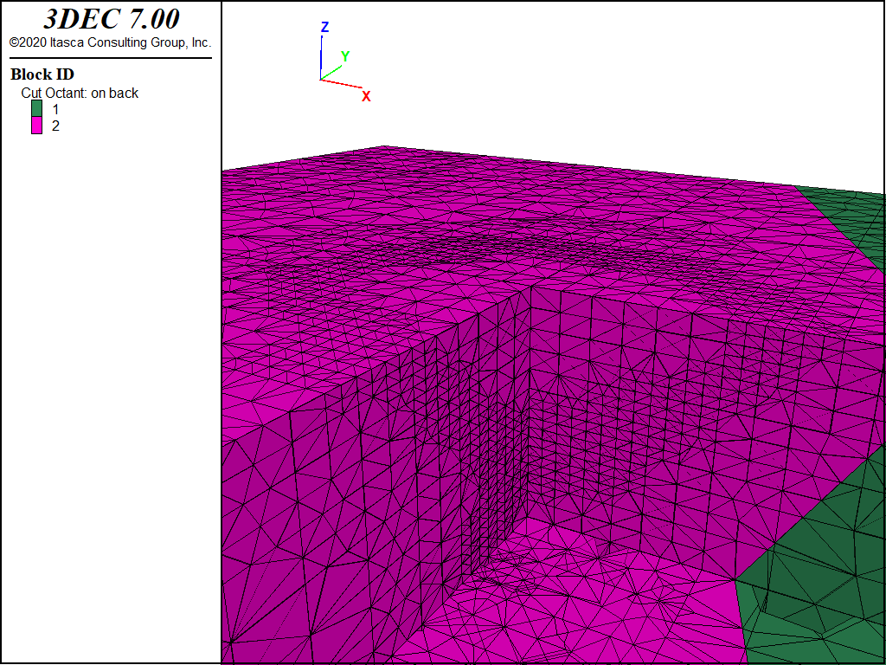
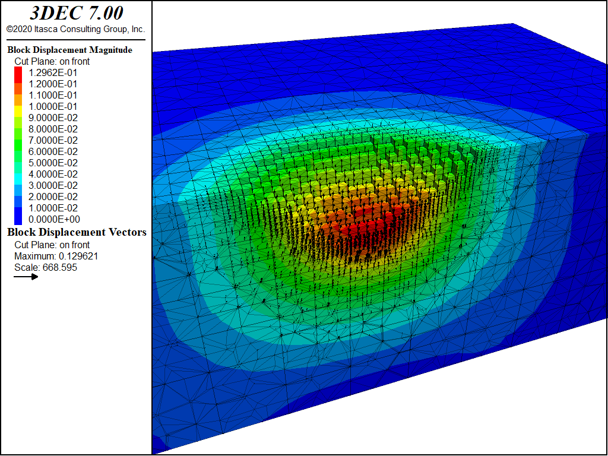
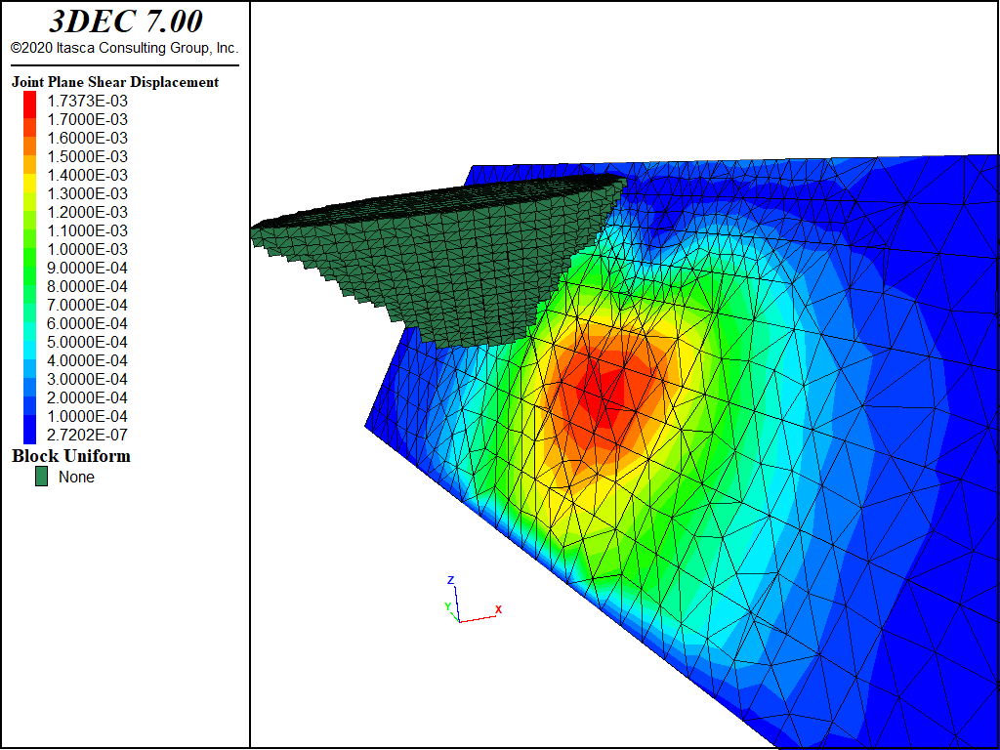
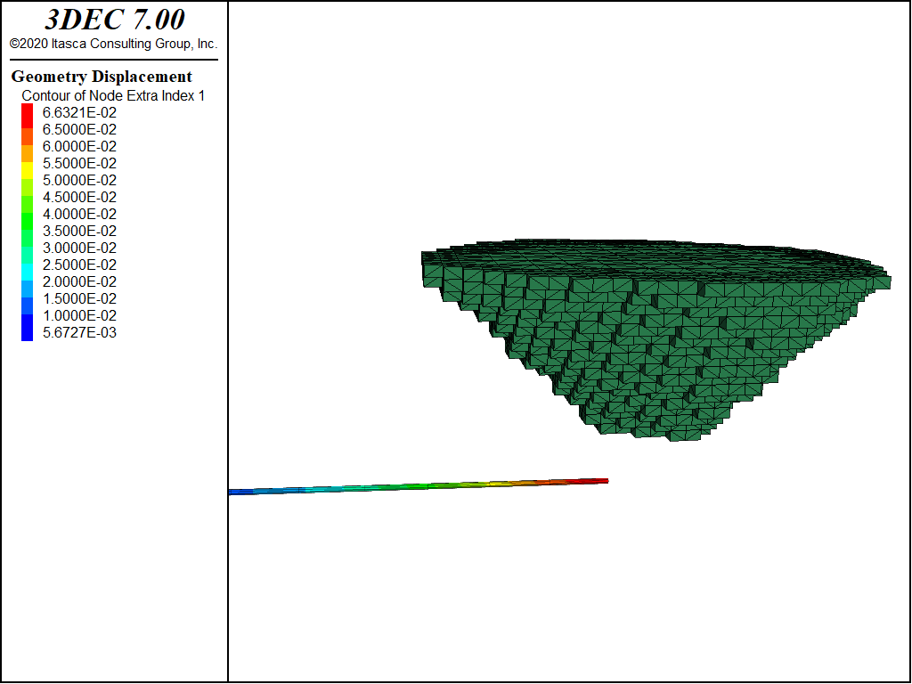

采用八叉树划分的露天矿
问题描述
注意
要在 3DEC 中查看此项目，请使用菜单命令 。选择“3DEC/ ExampleApplications/ FE / Octree_pit”，然后选择“octree_pit.prj”进行加载。所用的主数据文件（main data files）显示在本示例的末尾。所有数据文件都可在该项目中找到。
本示例将介绍用于导入几何集并创建露天矿 3DEC 模型的基本命令。本教程使用由等高线创建的预定义几何。所用几何为立体光刻（*.stl）文件类型，3DEC 能够导入该类型（前提是它们为拼接的形状）。本教程包含的三个 *.stl 文件为“pit.stl”“ore.stl”和“tunnel.stl”。3DEC 也可以用同样的方式导入 AutoCAD 图形交换格式（dxf）文件。
3DEC 模型几何
模型的构建从一个大的块体开始，通过将其切割成更小的块体来定义露天矿几何。使用 block create brick 命令并提供 x、y、z 界限。该模型采用英制单位，因此块体坐标以英尺计。在创建第一个块体之前，使用 block tolerance 命令指定一个总体模型容差。默认容差设置为 0.0012 × 模型在 x、y、z 方向的平均尺寸。对本示例，默认值过大，因此需要更小的值。
接下来，将初始砖块切割成更小的块体（6x6x3）。这将提高模型几何的分辨率，也会加快网格生成。可以用一系列 block cut 命令来完成，但使用 block densify 命令更为简单。
用该命令生成的节理并非地质节理，只是用于定义几何。因此使用 join 关键字将块体跨节理连接起来。此时的块体如图 1（Figure 1）所示


图 1：构成露天矿模型的初始块体
几何
既然块体模型已经创建，现在就可以导入预定义的几何。首先，将 *.stl 文件复制到你的项目文件夹中。*.stl 文件位于程序安装目录下的“DataFiles3D3DECExampleApplicationsOctree_pit”文件夹中。使用 geometry import 命令导入这些几何。
也可以通过 File → Open Item 导入文件，但要注意，如果重新执行数据文件“pit_zoned.3ddat”（你即将这样做），几何将不会被导入，因为使用 File 菜单不会在数据文件中生成所需的命令。
现在可以通过在 User Defined Data 下添加 Geometry 绘图项来绘制导入的几何。确保在 Plot Item Attributes 的 Imported Sets 下两组均被勾选。几何如图 2（Figure 2）所示。


图 2：导入的露天矿与矿体几何。
现在再次使用 block densify 命令为模拟创建更高分辨率的块体模型。带 repeat 关键字和 range geometry 的 densify block 命令会自动在几何附近切割块体，并生成八叉树网格。八叉树网格基于将空间不断细分为六面体块体。本情况下，范围为露天矿与矿体几何。
该操作迭代地查找与几何接触的块体（dist 0 extent）并将其分割为 8 个块体。该操作重复 4 次，以确保关注区域内的块体足够小、能够定义露天矿和矿体几何。gradlimit 关键字确保相邻块体的加密程度相差不超过一级（即确保不会出现大块体紧邻极小块的组合）。使用 join 关键字连接块体。更多信息见 block densify。
接下来，我们引入一条地质断层，倾角为 60^{circ}，倾向为 250^{circ}，原点为 (14200, -24300, -270)，使该断层位于露天矿之外并向其倾斜。此时的模型如图 3（Figure 3）所示。


图 3：加密并切割断层后构成露天矿模型的块体。
网格划分与属性
既然几何和断层已经创建，就可以进行四面体网格划分。我们希望露天矿和矿体几何附近网格较细，而随着同心远离露天矿网格逐渐变粗。为此，首先建立分组以定义不同区域，然后使用 block zone generate 命令为不同分组指定不同的棱边长度。
我们希望为矿体区域和周围岩石赋予不同属性。可以使用命令 block zone group 'ore_zones' range geometry-space 'ore' count odd 将位于矿体几何内部的网格单元分组。
range geometry 从每个网格单元的中心投射一条射线，并统计与几何的交点数目。默认射线方向为竖直向上（0, 0, 1）。使用 count odd 关键字时，如果投射射线的交点数为奇数（即网格单元位于几何内部），则将该网格单元加入该分组。
所得的网格单元分组如图 4（Figure 4）所示……


图 4：显示网格单元分组的已划分网格模型。为便于观察，切去了模型的四分之一。
然后按下表为网格单元赋予属性：
节理属性也赋予该断层。赋予 20^{circ} 的摩擦角和 1000 lbf/ft^2 的黏聚力。
初始条件与边界条件
现在模型需要初始化重力、地应力和边界条件。这通过以下命令完成：
model gravity 0 0 -32.17
;
block insitu topography ratio-x 1 ratio-y 1
;
block gridpoint apply velocity-x 0 range position-x 10000
block gridpoint apply velocity-x 0 range position-x 16000
block gridpoint apply velocity-y 0 range position-y -27000
block gridpoint apply velocity-y 0 range position-y -21000
block gridpoint apply velocity-z 0 range position-z -1620
重力参数设为沿 z 轴负方向 32.17 ft/sec2（x 和 y 分量为 0）。使用 block insitu topography 命令根据岩石密度、深度和重力确定地应力。应力为各向同性（ratio-x 和 ratio-y 设为 1。
使用 block gridpoint apply 命令建立边界条件。模型边界在垂直于边界的方向上速度限制为零。模型顶部可自由运动。
最后一步是打开节点混合离散化（block zone nodal-mixed-discretizaton on。这是一种数值技术，用于从四面体网格单元获得更准确的塑性结果。
随后求解模型并保存。
开挖
下一步是对露天矿区域内的材料进行分组。首先重置块体分组，并将所有块体赋予名为“default.”的分组。然后使用与赋予“ore”网格单元分组类似的方法，将露天矿内的块体赋予名为“pit”的分组。注意，必须将投射光线的方向改为向下，以便识别露天矿上方的块体。所得的块体分组如图 5（Figure 5）所示。


图 5：显示块体分组的已划分网格模型。为便于观察，切去了模型的四分之一。
现在可以移除露天矿材料。由于露天矿几何内的块体先前已分组，因此可以方便地开挖由“pit_blocks”分组指定的范围（block excavate range group 'pit_blocks'。
接下来，重置节理和网格点位移，因为我们不关心初始应力安装过程中产生的位移。最后使用 model solve elastic 求解模型。elastic 关键字会使模型首先在所有节理和网格单元均设为弹性（不破坏）的情况下求解，然后用真实的网格单元与节理强度再次求解。这有助于防止因整个露天矿一次开挖所产生的非真实瞬时应力变化而引起虚假破坏。
结果
所得的网格点位移如图 6（Figure 6）所示。位移总体向上，反映了岩石被移除后的回弹。
节理位移如图 7（Figure 7）所示。节理位移量小且位置较深，表明露天矿开挖并未在断层上引起明显滑动。


图 6：露天矿模型中的位移


图 7：露天矿模型中某节理上的剪切位移
绘制
模型求解完成后，可以通过绘制特定位置上的量来进行分析后处理。3DEC 具备将数据“绘制”到导入的几何表面上的功能。假设露天矿下方有一条关键隧洞，我们希望了解该隧洞上的位移。隧洞本身并未实际建模，但我们可以通过将位移绘制到隧洞表面上来估算隧洞位置处的开挖影响。
我们导入一个隧洞几何“tunnel.stl”。可将不同属性“绘制”到已有几何集上，如同这些几何是拟建而未建，或者这些要素存在但未被建模。我们将使用 geometry 命令的 paint-extra-block 关键字把位移数据绘制到隧洞上。
结果如图 8（Figure 8）所示。


图 8：绘制到拟建隧洞上的位移
数据文件
octree_pit.dat
; ---- 露天坑开挖模型算例 ----
model new
model random 10000
model large-strain on
block tolerance 0.01
block create brick (10000,16000 -27000,-21000 -1620,380)
;
block densify segments 6 6 3 join
;
; --- 导入几何对象，并在坑壁和矿体边界附近加密块体 --
geometry import 'pit.stl'
geometry import 'ore.stl'
;
block densify gradient-limit repeat 4 join ...
range geometry-distance 'pit' set 'ore' gap 0 extent
;
; --- 添加节理 ---
block cut joint-set dip 60 dip-direction 250 origin 14200,-24300,-270
;
;
; --- 为块体划分网格 ---
block group 'coarse_zone' range geometry-distance 'pit' set 'ore' gap 500
block group 'fine_zone' range geometry-distance 'pit' set 'ore' gap 100
block zone generate edgelength 50 range group 'fine_zone'
block zone generate edgelength 100 range group 'coarse_zone'
block zone generate edgelength 200
;
block zone group 'ore_zones' range geometry-space 'ore' count odd
;
; --- 设置参数 ---
block zone cmodel assign mohr-coulomb
block zone property bulk 2.5e8 shear 1.5e8 density 5.4
block zone property cohesion 25000 friction 60 tension 4000
block zone property bulk 5e7 shear 2.3e7 density 3.5 range group 'ore_zones'
block zone property cohesion 3000 fric 35 tens 50 range group 'ore_zones'
;
block contact property stiffness-normal 1e7 stiffness-shear 6e6 ...
friction 20 cohesion 1000 tension 0
block contact material-table default property stiffness-normal 1e7 ...
stiffness-shear 6e6
;
; --- 设置初始条件和边界条件 ---
model gravity 0 0 -32.17
;
block insitu topography ratio-x 1 ratio-y 1
;
block gridpoint apply velocity-x 0 range position-x 10000
block gridpoint apply velocity-x 0 range position-x 16000
block gridpoint apply velocity-y 0 range position-y -27000
block gridpoint apply velocity-y 0 range position-y -21000
block gridpoint apply velocity-z 0 range position-z -1620
;
; --- 启用节点混合离散（NMD）---
block zone nodal-mixed-discretization on
;
; --- 求解初始状态 ---
model solve
model save 'pit_initial'
==================================================
;
block group 'default'
block group 'pit_blocks' range geometry-space 'pit' count 1 direction 0 0 -1
;
; --- 开挖并求解 ---
block excavate range group 'pit_blocks'
block gridpoint initialize displacement 0 0 0
block contact reset displacement
model solve elastic
=================================================
;
; --- 将位移映射到拟建隧道上 ---
geometry import 'tunnel.stl'
geometry select 'tunnel'
geometry paint-extra-block 1 displacement component magnitude
;
model save 'pit_solve'
| 这些内容对您有帮助吗？… 版权与免责声明 | FLAC3D © 2019, Itasca | 原文更新于 2020 年 10 月 8 日 |